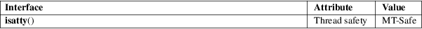

isatty − test whether a file descriptor refers to a terminal
Standard C library (libc, −lc)
#include <unistd.h>
int isatty(int fd);
The isatty() function tests whether fd is an open file descriptor referring to a terminal.
isatty() returns 1 if fd is an open file descriptor referring to a terminal; otherwise 0 is returned, and errno is set to indicate the error.
|
EBADF |
fd is not a valid file descriptor. | ||
|
ENOTTY |
fd refers to a file other than a terminal. On some older kernels, some types of files resulted in the error EINVAL in this case (which is a violation of POSIX, which specifies the error ENOTTY). |
For an explanation of the terms used in this section, see attributes(7).

POSIX.1-2008.
POSIX.1-2001, SVr4, 4.3BSD.
fstat(2), ttyname(3)